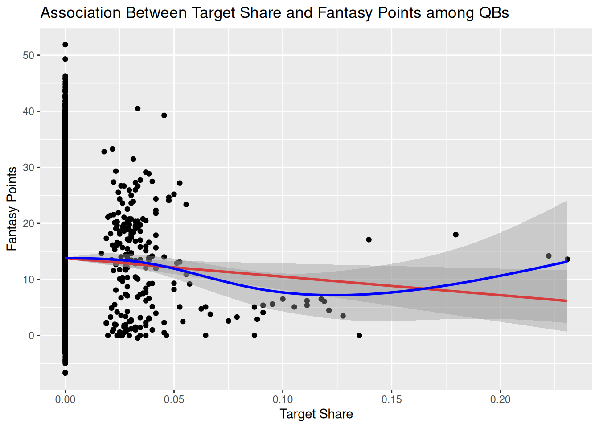
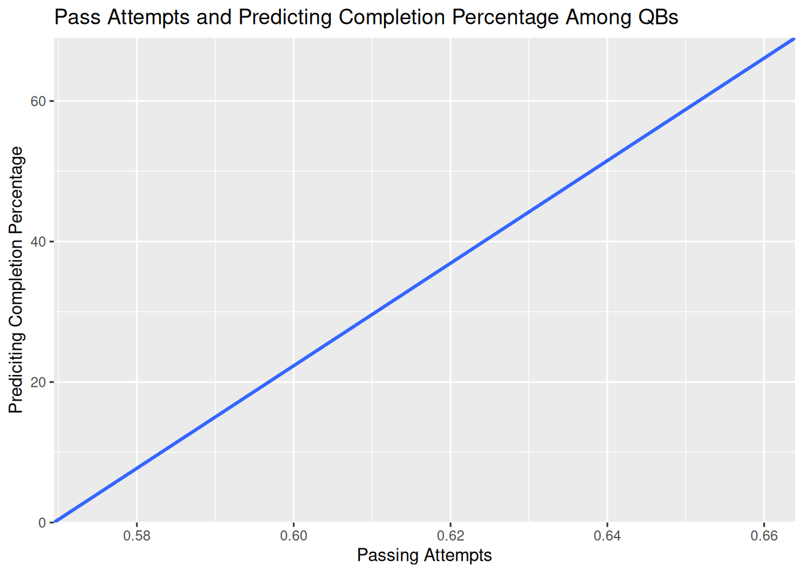

Code
#install.packages("remotes")
#remotes::install_github("DevPsyLab/petersenlab")
#remotes::install_github("FantasyFootballAnalytics/ffanalytics")
#update.packages(ask = FALSE)Finley Jacobson
September 30, 2025
Note: The post image was obtained from here.
library("petersenlab") #located here: https://github.com/DevPsyLab/petersenlab
library("rms")
library("car")
library("bestNormalize")
library("lme4")
library("performance")
library("lavaan")
library("mice")
library("miceadds")
library("interactions")
library("brms")
library("parallelly")
library("robustbase")
library("ordinal")
library("MASS")
library("broom")
library("effectsize")
library("tidymodels")
library("tidyverse")
library("knitr")AI Disclosure: AI was not used
Link to AI Transcript: not applicable
Background: Fantasy football involves assessing several factors and variables. Choosing the wrong player can easily be the sole reason you look at a particular week. That’s why I’m assessing some quarterback variables to determine, for fantasy football participants and even football coaches, the best approach to evaluating a player.
Method: In the present study, I assess whether quarterbacks’ completion percentages, passing attempts, and age are associated with one another and with fantasy football performance.
Results: Hypothesis #1 was partially correct, while hypotheses #2 and #3 were correct. Prediction #1 was predicted incorrectly, while predictions #2 and #3 were predicted correctly.
Discussion: Overall, the study concluded statistically significant results for completion percentage, passing attempts, and age. Positive associations were found for all except one (i.e., target shares and fantasy points).
As a person who just joined a fantasy football league this year for the first time, it can be confusing about what you should be looking at when considering a player for your team. Especially when picking quarterbacks, since they can earn quite a bit of points for your team. But choosing the wrong quarterback could result in a tremendous loss of points for your team. So what should you be looking at? Well, in this study, I have chosen to assess whether a quarterback’s completion percentage, passing attempts, and age are associated with one another (i.e., positively or negatively). Knowing the typical associations these factors have with each other can further improve your performance in your fantasy football league (i.e., or at least gauge you in the right direction when choosing a quarterback). Even coaches can use this information in their decision-making. Because people who participate in fantasy football and coaches of a football team all have something in common: they want their players to perform well.
In the present study, I assess whether quarterbacks’ completion percentages, passing attempts, and age are associated with one another and with fantasy football performance (i.e., points earned).
Research Question: Is completion percentage associated (i.e., negatively or positively) with passing attempts and fantasy football points for quarterbacks? Prediction #1: Quarterbacks with higher target shares will score higher fantasy football points vs. quarterbacks with lower target shares. Prediction #2: Quarterbacks with higher completion percentages will attempt more passes than quarterbacks with lower completion percentages. Prediction #3: Quarterbacks with more passing attempts who are older will have higher completion percentages than quarterbacks with fewer passing attempts who are younger. Hypothesis #1: Target share is significantly associated with fantasy football points among quarterbacks. Hypothesis #2: Completion percentage will significantly predict passing attempts among quarterbacks. Hypothesis #3: Passing attempts and age will both significantly predict completion percentage.
I chose these hypotheses for a couple of reasons. First, I wanted to use the larger data codes provided in class rather than ESPN or DraftShark. Not only did I decide to challenge myself, but I figured a large sample size would be easier to analyze than a data set of only ten football players. Additionally, similar data analyses were provided during in-class activities, so I used those codes but focused only on quarterbacks rather than other positions. This study is innovative and important and can be used to (potentially) improve a person’s fantasy football roster, provide useful information for football teams (i.e., if they are choosing a new quarterback), and involves statistical data analysis of over a thousand quarterbacks.
To test the hypotheses, I first examine whether the target share is associated (i.e., positively or negatively) with quarterbacks earning fantasy football points. Next, I examine whether complete percentages predict passing attempts for quarterbacks. Lastly, I examine whether passing attempts and age will both predict completion percentage for quarterbacks.
Below, I load the data file used for this post. The data file contains 437,309 weekly player statistics and 167 labeled columns, including variables such as air yards, receiving yards, and fantasy points. I obtained the data file from the Open Science Framework repository for the textbook, “Fantasy Football Analytics: Statistics, Prediction, and Empiricism Using R” (Petersen, 2025).
Note: Sample sizes: (Pearson’s correlation, n = 12,426), (Simple regression, n = 15,371) and (Multiple regression, n = 15,256).
First, I subset the data to quarterbacks:
Now, we only have the weekly players’ stats of Quarterbacks, and this data includes all seasons since 1999 (i.e., currently 1999–2024):
[1] 1999 2000 2001 2002 2003 2004 2005 2006 2007 2008 2009 2010 2011 2012 2013
[16] 2014 2015 2016 2017 2018 2019 2020 2021 2022 2023 2024Descriptive statistics for the variables that are the focus of this article:
modelVars <- c("target_share", "fantasyPoints","pass_comp_pct", "age")
analysisData %>%
dplyr::select(all_of(modelVars)) %>%
dplyr::summarise(across(
everything(),
.fns = list(
n = ~ length(na.omit(.)),
missingness = ~ mean(is.na(.)) * 100,
M = ~ mean(., na.rm = TRUE),
SD = ~ sd(., na.rm = TRUE),
min = ~ min(., na.rm = TRUE),
max = ~ max(., na.rm = TRUE),
q10 = ~ quantile(., .10, na.rm = TRUE), # 10th quantile
q90 = ~ quantile(., .90, na.rm = TRUE), # 90th quantile
range = ~ max(., na.rm = TRUE) - min(., na.rm = TRUE),
IQR = ~ IQR(., na.rm = TRUE),
MAD = ~ mad(., na.rm = TRUE),
CV = ~ sd(., na.rm = TRUE) / mean(., na.rm = TRUE),
median = ~ median(., na.rm = TRUE),
pseudomedian = ~ DescTools::HodgesLehmann(., na.rm = TRUE),
mode = ~ petersenlab::Mode(., multipleModes = "mean"),
skewness = ~ psych::skew(., na.rm = TRUE),
kurtosis = ~ psych::kurtosi(., na.rm = TRUE)),
.names = "{.col}.{.fn}")) %>%
tidyr::pivot_longer(
cols = everything(),
names_to = c("variable","index"),
names_sep = "\\.") %>%
tidyr::pivot_wider(
names_from = index,
values_from = value)I used Pearson correlation to examine the relationship between target share and fantasy points among quarterbacks. I used multiple regression to predict completion percentage from passing attempts and age.
Below, we can see the association between target share and fantasy points among quarterbacks.
Pearson's product-moment correlation
data: target_share and fantasyPoints
t = -2.7274, df = 12424, p-value = 0.006392
alternative hypothesis: true correlation is not equal to 0
95 percent confidence interval:
-0.042026765 -0.006882035
sample estimates:
cor
-0.02446196 According to the results, this indicates a very weak negative linear correlation between the two variables (i.e., as target share increases, fantasy football points decrease). Additionally, the results also show a statistically significant relationship.
ggplot2::ggplot(
data = player_stats_weekly %>% filter(position == "QB"),
aes(
x = target_share,
y = fantasyPoints)) +
geom_point() +
geom_smooth(
method = "lm", # linear best-fit line
color = "red") +
geom_smooth(
method = "gam", # nonlinear best-fit line
color = "blue"
) +
labs(
x = "Target Share",
y = "Fantasy Points",
title = "Association Between Target Share and Fantasy Points among QBs"
)`geom_smooth()` using formula = 'y ~ x'Warning: Removed 3677 rows containing non-finite outside the scale range
(`stat_smooth()`).`geom_smooth()` using formula = 'y ~ s(x, bs = "cs")'Warning: Removed 3677 rows containing non-finite outside the scale range
(`stat_smooth()`).Warning: Removed 3677 rows containing missing values or values outside the scale range
(`geom_point()`).
Above, I have included a scatterplot so we are able to see the results ‘visually’.
Below is a linear regression model with one predictor, pass attempts, predicting completion percentage among Quarterbacks.
Call:
lm(formula = attempts ~ pass_comp_pct, data = player_stats_weekly %>%
filter(position %in% c("QB")), na.action = "na.exclude")
Residuals:
Min 1Q Median 3Q Max
-32.209 -6.256 1.286 7.982 40.623
Coefficients:
Estimate Std. Error t value Pr(>|t|)
(Intercept) 23.1062 0.4157 55.58 <2e-16 ***
pass_comp_pct 10.1024 0.6631 15.23 <2e-16 ***
---
Signif. codes: 0 '***' 0.001 '**' 0.01 '*' 0.05 '.' 0.1 ' ' 1
Residual standard error: 12.08 on 15369 degrees of freedom
(732 observations deleted due to missingness)
Multiple R-squared: 0.01488, Adjusted R-squared: 0.01481
F-statistic: 232.1 on 1 and 15369 DF, p-value: < 2.2e-16# Standardization method: refit
Parameter | Std. Coef. | 95% CI
----------------------------------------------
(Intercept) | 8.8401e-17 | [-0.0157, 0.0157]
pass comp pct | 0.1220 | [ 0.1063, 0.1377]According to the results, predicting completion percentage was positively associated with the number of passing attempts (i.e., quarterbacks who complete passes at a higher rate tend attempt more passes than quarterbacks who complete fewer passes). This relationship is also statistically significant.
Below, is a linear regression model that adds the player’s age as a covariate to control for age.
Call:
lm(formula = pass_comp_pct ~ attempts + age, data = player_stats_weekly %>%
filter(position %in% c("QB")), na.action = "na.exclude")
Residuals:
Min 1Q Median 3Q Max
-0.59830 -0.07129 0.00215 0.07863 0.44616
Coefficients:
Estimate Std. Error t value Pr(>|t|)
(Intercept) 0.5045473 0.0078727 64.09 <2e-16 ***
attempts 0.0013703 0.0000973 14.08 <2e-16 ***
age 0.0022449 0.0002607 8.61 <2e-16 ***
---
Signif. codes: 0 '***' 0.001 '**' 0.01 '*' 0.05 '.' 0.1 ' ' 1
Residual standard error: 0.1455 on 15253 degrees of freedom
(847 observations deleted due to missingness)
Multiple R-squared: 0.01934, Adjusted R-squared: 0.01921
F-statistic: 150.4 on 2 and 15253 DF, p-value: < 2.2e-16# Standardization method: refit
Parameter | Std. Coef. | 95% CI
--------------------------------------------
(Intercept) | 3.9758e-16 | [-0.0157, 0.0157]
attempts | 0.1135 | [ 0.0977, 0.1293]
age | 0.0694 | [ 0.0536, 0.0852]According to the results, attempts and age are positively associated with predicting completion percentage among QBs. These results were also statistically significant.
newdata1 <- data.frame(
attempts = seq(
from = min(player_stats_weekly$attempts[which(player_stats_weekly$position == "QB")], na.rm = TRUE),
to = max(player_stats_weekly$attempts[which(player_stats_weekly$position == "QB")], na.rm = TRUE),
length.out = 1000
),
age = mean(player_stats_weekly$age[which(player_stats_weekly$position == "QB")], na.rm = TRUE)
)
newdata1$pass_comp_pct <- predict(
regressionTwoPredictors,
newdata = newdata1
)
ggplot2::ggplot(
data = newdata1,
aes(
x = pass_comp_pct,
y = attempts)) +
geom_smooth() +
coord_cartesian(
ylim = c(0, NA),
expand = FALSE) +
labs(
x = "Passing Attempts",
y = "Prediciting Completion Percentage",
title = "Pass Attempts and Predicting Completion Percentage Among QBs"
)`geom_smooth()` using method = 'gam' and formula = 'y ~ s(x, bs = "cs")'
Above, I have included a visualization of completion percentage by passing attempts. Now you can ‘visually’ see how attempts and age are positively associated with completion percentage among QBs
After reviewing all of my findings, hypotheses #2 and #3 were supported (i.e., results were statistically significant) as well as predictions #2 and #3 (i.e., general direction was predicted accurately) while hypothesis #1 was partially supported (i.e., results were statistically significant) and prediction #1 was not supported (general direction was not predicted accurately). Statistical significance is apparent in the study, but it could very well be due to the large sample size. The study has practical significance, but the effects are small and could be limited. These findings are important because they can help people choose a quarterback based on real-world data. These results can also help coaches determine who their quarterback should be.
Strengths: The study utilized thousands of quarterbacks, which contributed toward greater reliability and generalizability. The data used was real-world data, dating back to 1999.
Limitations: The study did not incorporate other similar research to support predictions, hypotheses, or findings. Results may be due to other external factors, such as weather, physical health (e.g., injury status), and/or the defensive strength of the other team. The study assessed only quarterbacks, so the data may be generalizable only to quarterbacks.
If the study were to be repeated, I would incorporate more variables and cover other football positions, rather than just one, to make the findings even more generalizable. But overall, the study concluded statistically significant results for completion percentage, passing attempts, and age. Positive associations were found for all except one (i.e., target shares and fantasy points). So the next time you are choosing a quarterback (e.g., whether it’s for fantasy football or if you are a coach for a football team), keeping the tested variables in mind might actually prove to be beneficial for you.
Petersen, I. T. (2025). Fantasy football analytics: Statistics, prediction, and empiricism using R. University of Iowa Libraries. https://isaactpetersen.github.io/Fantasy-Football-Analytics-Textbook
This section provides your session info for reproducibility.
R version 4.5.2 (2025-10-31)
Platform: x86_64-pc-linux-gnu
Running under: Ubuntu 24.04.3 LTS
Matrix products: default
BLAS: /usr/lib/x86_64-linux-gnu/openblas-pthread/libblas.so.3
LAPACK: /usr/lib/x86_64-linux-gnu/openblas-pthread/libopenblasp-r0.3.26.so; LAPACK version 3.12.0
locale:
[1] LC_CTYPE=C.UTF-8 LC_NUMERIC=C LC_TIME=C.UTF-8
[4] LC_COLLATE=C.UTF-8 LC_MONETARY=C.UTF-8 LC_MESSAGES=C.UTF-8
[7] LC_PAPER=C.UTF-8 LC_NAME=C LC_ADDRESS=C
[10] LC_TELEPHONE=C LC_MEASUREMENT=C.UTF-8 LC_IDENTIFICATION=C
time zone: UTC
tzcode source: system (glibc)
attached base packages:
[1] stats graphics grDevices utils datasets methods base
other attached packages:
[1] knitr_1.50 lubridate_1.9.4 forcats_1.0.1
[4] stringr_1.6.0 readr_2.1.6 tibble_3.3.0
[7] tidyverse_2.0.0 yardstick_1.3.2 workflowsets_1.1.1
[10] workflows_1.3.0 tune_2.0.1 tidyr_1.3.1
[13] tailor_0.1.0 rsample_1.3.1 recipes_1.3.1
[16] purrr_1.2.0 parsnip_1.4.0 modeldata_1.5.1
[19] infer_1.0.9 ggplot2_4.0.1 dplyr_1.1.4
[22] dials_1.4.2 scales_1.4.0 tidymodels_1.4.1
[25] effectsize_1.0.1 broom_1.0.11 MASS_7.3-65
[28] ordinal_2023.12-4.1 robustbase_0.99-6 parallelly_1.46.0
[31] brms_2.23.0 Rcpp_1.1.0 interactions_1.2.0
[34] miceadds_3.18-36 mice_3.19.0 lavaan_0.6-20
[37] performance_0.15.3 lme4_1.1-38 Matrix_1.7-4
[40] bestNormalize_1.9.2 car_3.1-3 carData_3.0-5
[43] rms_8.1-0 Hmisc_5.2-4 petersenlab_1.2.2
loaded via a namespace (and not attached):
[1] splines_4.5.2 polspline_1.1.25 cellranger_1.1.0
[4] datawizard_1.3.0 hardhat_1.4.2 rpart_4.1.24
[7] lifecycle_1.0.4 Rdpack_2.6.4 doParallel_1.0.17
[10] globals_0.18.0 lattice_0.22-7 insight_1.4.4
[13] backports_1.5.0 magrittr_2.0.4 rmarkdown_2.30
[16] yaml_2.3.12 doRNG_1.8.6.2 gld_2.6.8
[19] DBI_1.2.3 minqa_1.2.8 RColorBrewer_1.1-3
[22] multcomp_1.4-29 abind_1.4-8 expm_1.0-0
[25] quadprog_1.5-8 nnet_7.3-20 TH.data_1.1-5
[28] tensorA_0.36.2.1 sandwich_3.1-1 jtools_2.3.0
[31] ipred_0.9-15 lava_1.8.2 listenv_0.10.0
[34] MatrixModels_0.5-4 bridgesampling_1.2-1 codetools_0.2-20
[37] tidyselect_1.2.1 shape_1.4.6.1 bayesplot_1.15.0
[40] farver_2.1.2 broom.mixed_0.2.9.6 matrixStats_1.5.0
[43] stats4_4.5.2 base64enc_0.1-3 butcher_0.4.0
[46] jsonlite_2.0.0 e1071_1.7-16 mitml_0.4-5
[49] Formula_1.2-5 survival_3.8-3 iterators_1.0.14
[52] emmeans_2.0.1 foreach_1.5.2 tools_4.5.2
[55] progress_1.2.3 DescTools_0.99.60 glue_1.8.0
[58] mnormt_2.1.1 prodlim_2025.04.28 gridExtra_2.3
[61] pan_1.9 mgcv_1.9-3 xfun_0.55
[64] distributional_0.5.0 withr_3.0.2 loo_2.8.0
[67] numDeriv_2016.8-1.1 fastmap_1.2.0 mitools_2.4
[70] boot_1.3-32 SparseM_1.84-2 digest_0.6.39
[73] timechange_0.3.0 R6_2.6.1 estimability_1.5.1
[76] colorspace_2.1-2 mix_1.0-13 generics_0.1.4
[79] data.table_1.17.8 class_7.3-23 httr_1.4.7
[82] prettyunits_1.2.0 htmlwidgets_1.6.4 parameters_0.28.3
[85] pkgconfig_2.0.3 Exact_3.3 gtable_0.3.6
[88] timeDate_4051.111 GPfit_1.0-9 S7_0.2.1
[91] furrr_0.3.1 htmltools_0.5.9 lmom_3.2
[94] posterior_1.6.1 gower_1.0.2 reformulas_0.4.2
[97] rstudioapi_0.17.1 tzdb_0.5.0 reshape2_1.4.5
[100] coda_0.19-4.1 checkmate_2.3.3 nlme_3.1-168
[103] nloptr_2.2.1 proxy_0.4-28 zoo_1.8-15
[106] rootSolve_1.8.2.4 parallel_4.5.2 foreign_0.8-90
[109] pillar_1.11.1 grid_4.5.2 vctrs_0.6.5
[112] jomo_2.7-6 ucminf_1.2.2 lhs_1.2.0
[115] xtable_1.8-4 cluster_2.1.8.1 htmlTable_2.4.3
[118] evaluate_1.0.5 pbivnorm_0.6.0 mvtnorm_1.3-3
[121] cli_3.6.5 compiler_4.5.2 rlang_1.1.6
[124] crayon_1.5.3 rngtools_1.5.2 rstantools_2.5.0
[127] future.apply_1.20.1 labeling_0.4.3 fs_1.6.6
[130] plyr_1.8.9 stringi_1.8.7 psych_2.5.6
[133] pander_0.6.6 viridisLite_0.4.2 glmnet_4.1-10
[136] Brobdingnag_1.2-9 bayestestR_0.17.0 quantreg_6.1
[139] hms_1.1.4 future_1.68.0 haven_2.5.5
[142] rbibutils_2.4 RcppParallel_5.1.11-1 DEoptimR_1.1-4
[145] readxl_1.4.5 DiceDesign_1.10